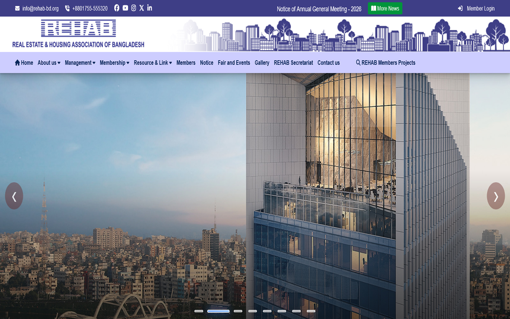
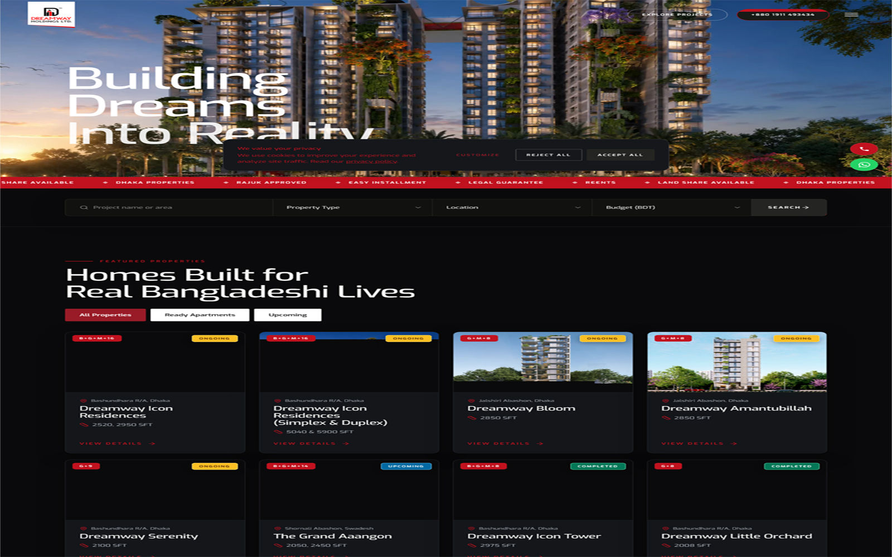
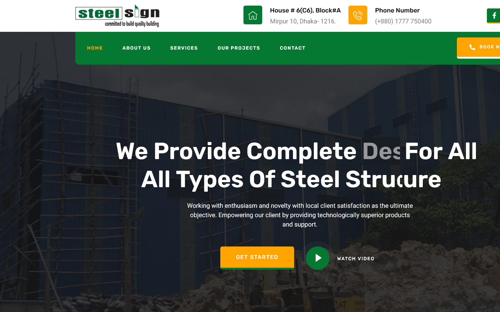
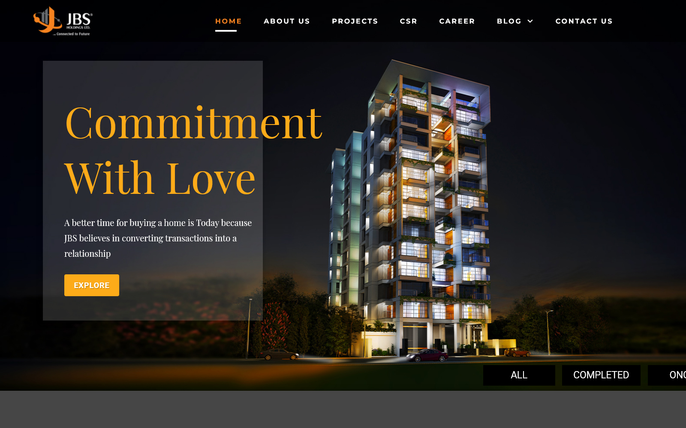
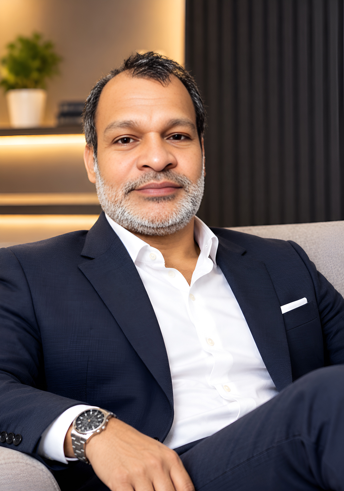

Website Design
Modern, user-focused website designs that combine clean aesthetics, intuitive navigation, and strategic layouts to communicate your brand and business goals effectively.
Available for Freelance Projects — Web Design & Development · WordPress · Full-Stack Development
UI/UX Designer & Web Developer. I design intuitive interfaces in Figma and transform them into fast, accessible, and responsive websites. From the first wireframe to the final line of code and deployment, I bring design and development together to create seamless digital experiences that look great, perform exceptionally, and help businesses grow. One person. From concept to code. From design to deployment.
Selected Work

Redesigned the REHAB Bangladesh website to deliver a more modern, user-friendly, and responsive digital experience, improving content presentation, navigation, and the organization’s professional online presence.

Redesigned the Dreamway Holdings Ltd. website to create a modern, professional, and responsive digital experience that showcases the company’s real estate projects, strengthens its corporate brand image, and helps potential clients explore property offerings more easily.

Designed and developed the Steel Sign website from the ground up, combining modern UI/UX design with responsive web development to showcase the company’s products and services, strengthen its brand presence, and deliver a seamless experience across desktop, tablet, and mobile devices.

Designed and developed the JBS Holdings Ltd. website from concept to implementation, creating a professional, responsive digital presence that reflects the company’s corporate identity, presents its business activities, and provides visitors with a clear and intuitive browsing experience.

About me
I'm a Web Designer and Developer passionate about creating meaningful digital experiences that combine thoughtful design, intuitive user experiences, and reliable development. I bring ideas to life by transforming complex requirements into modern, responsive, and user-friendly websites that look exceptional and perform seamlessly across devices. My approach goes beyond aesthetics. I focus on understanding business goals, user needs, and brand identity to create digital solutions that are purposeful, accessible, performance-driven, and built for growth. From UI/UX design and WordPress website development to complete website redesigns and full-stack projects, I work across the entire process—from the initial concept and visual direction to development, optimization, and launch. I believe great websites are built where creativity meets technical precision. My goal is to help businesses strengthen their online presence, communicate their value, and turn their digital platforms into meaningful business assets.
I believe great digital experiences are built through thoughtful design, clean development, and a deep understanding of user needs.
Services
Modern, user-focused website designs that combine clean aesthetics, intuitive navigation, and strategic layouts to communicate your brand and business goals effectively.
Responsive, pixel-precise websites built with clean, maintainable code, translating design concepts into engaging digital experiences across desktop, tablet, and mobile devices.
Flexible WordPress websites and e-commerce solutions that are easy to manage, tailored to your business needs, and built to deliver a seamless experience for your customers.
Transform outdated websites into modern, high-performing digital experiences with improved usability, responsive design, loading speed, and SEO fundamentals.
MY WORKFLOW
We talk goals, audience and budget, then agree on scope and timeline.
Wireframes first, then full visual designs you review and refine.
I develop, test on real devices and share a preview link for feedback.
Go live, hand over everything you need and stay available for support.
“We appreciate the thoughtful approach to redesigning our website. The improved visual presentation and user-focused layout help communicate our organization’s information more clearly and create a more professional online experience. The attention to detail throughout the project was greatly appreciated.”
“We are pleased with the overall design and development of our website. The combination of a clean, modern interface, responsive layouts, and functional implementation has helped present our business more professionally online. We value the dedication and attention given to bringing the project together.”